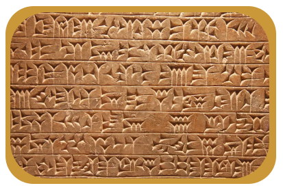
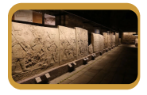

Início
Idade Antiga

Curiosidade: A primeira forma de fofoca registrada! Você não pode perder!
Destaque: Arquitetura inovadora! Última moda no nordeste da África!
Antes de conhecer o futuro, saiba do passado: descubra seu ancestralidade!
Entenda: A primeira história que foi do luxo ao lixo.

Destaque: Próximos ao mar morto com métodos mesopotâmicos!
Novidades em arquitetura, matemática e sociedade. Zeraram o jogo!